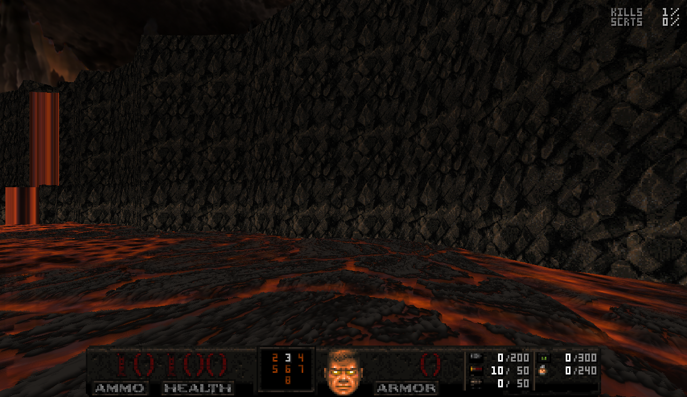
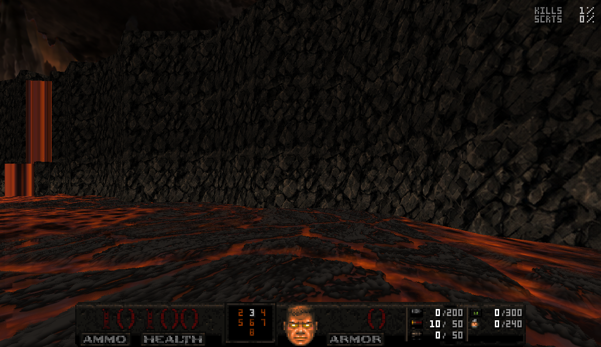
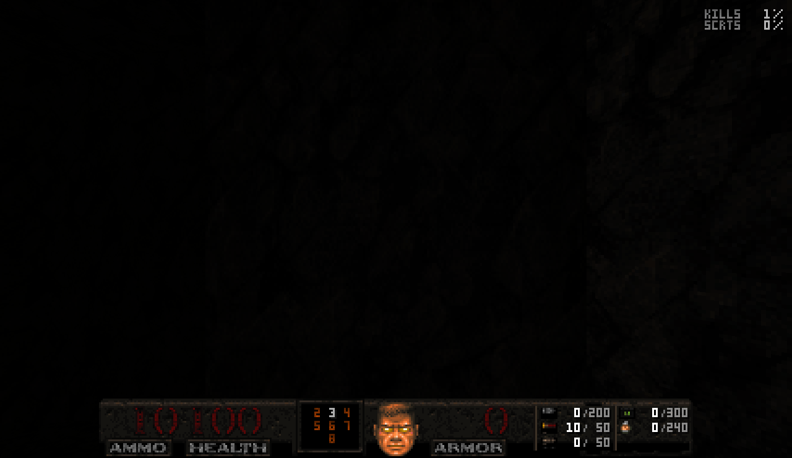
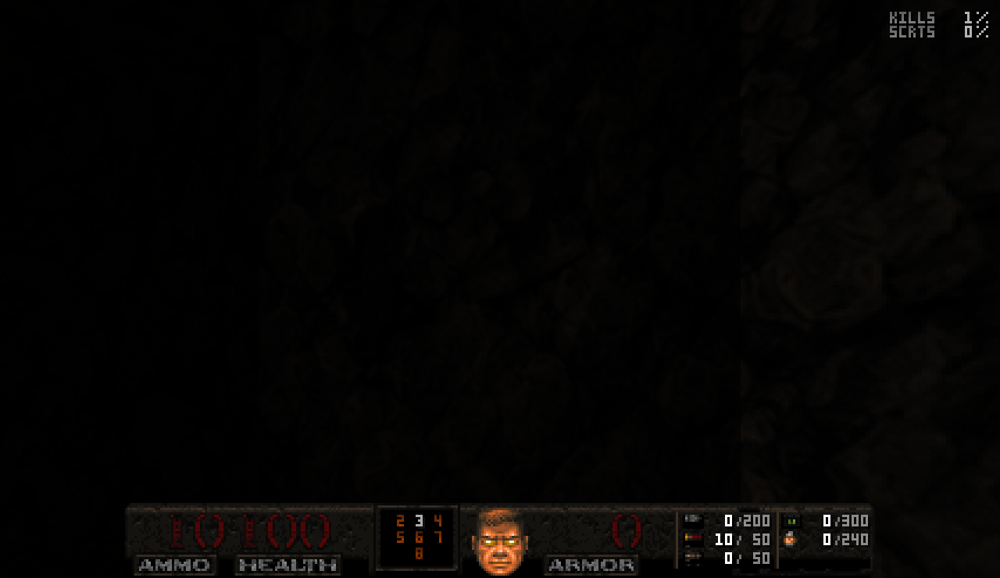
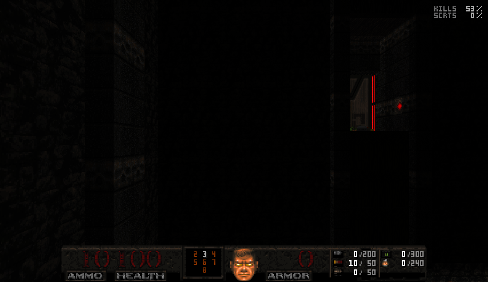
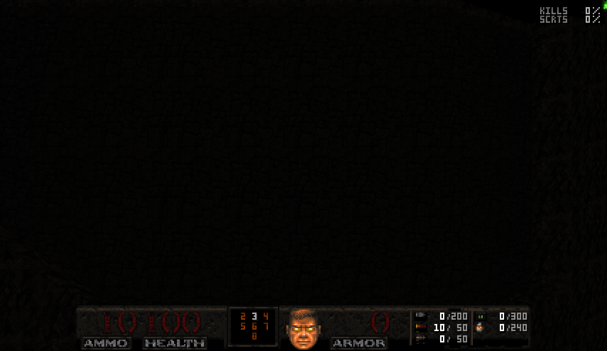
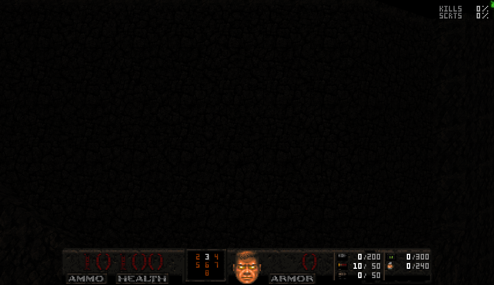

Große Felsflächen – Vorher / Nachher
Identische Kamerapositionen. Laufende Animationen und Effekte können zwischen den Aufnahmen abweichen.
QROCK1 · TNT04B
Original
Erweitert und ausgerichtet
QROCK3 · TNT04B
Original
Erweitert und ausgerichtet
QROCK4 · TNTLE
Original
Erweitert und ausgerichtet QROCK5 · TNT04CN
Original
Erweitert und ausgerichtet